2.1 Configure settings on UR-Vault App for browser integration
Go to Settings on UR-Vault App.
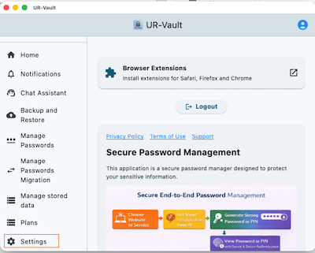
Change the Port number on Settings App if needed:
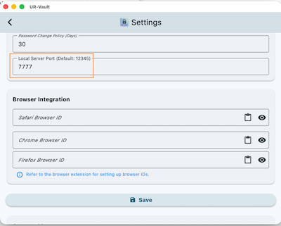
Open the Configuration tab on browser extension. Change the port number to match the port number set on the UR-Vault App. Click on Connection icon.
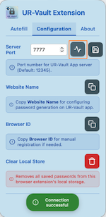
Once the connection is successful, save the port number by clicking on Save button.
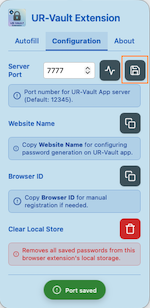
Next on the Autofill tab, click on Register with UR-Vault App button.
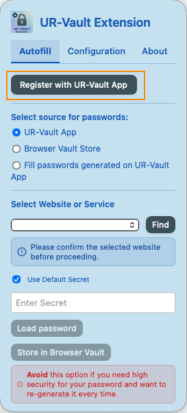
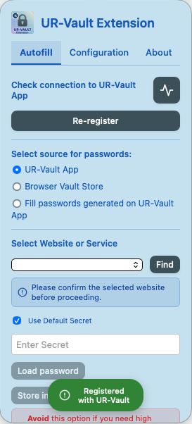
3. Password generation for a website
Open a website on the browser (e.g. http://localhost:3000/home.html).
Open the extension and copy the website name.
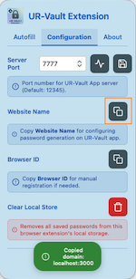
Open the UR-Vault App. Go to Manage Passwords. Select Generate. Click on Paste icon to paste the website name.
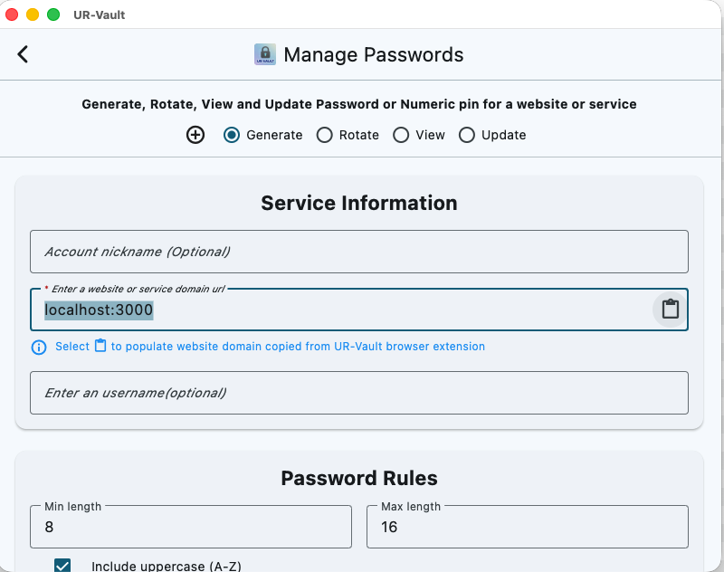
Enter Account nickname and username.
Enter Password rules for the website. You can use the Chat Assistant to get password rules for public websites.
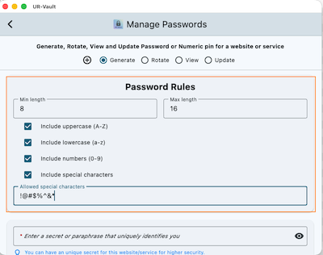
Enter a unique secret name for the password generation. It can be the default secret configured on the Settings page.
Note: Please change the default secret value on Settings page before selection on this page.
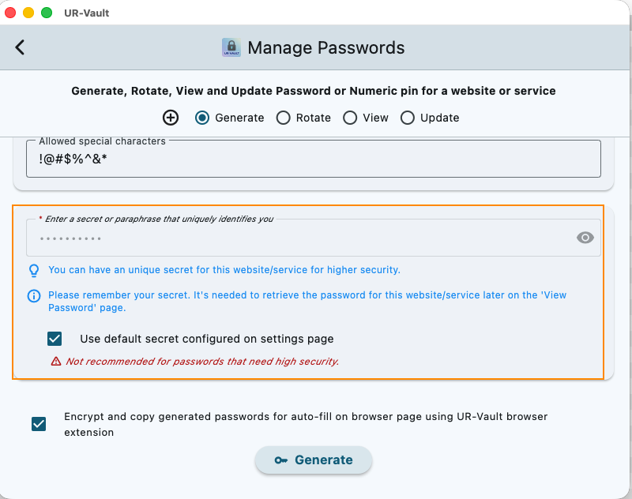
Click on Generate to generate the password. The passwords are now copied to clipboard in encrypted format.
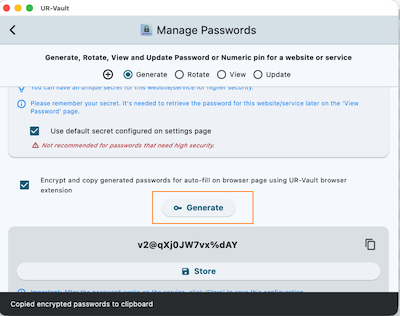
Next, go back to the browser extension Autofill tab.
Select the option Fill passwords generated on UR-Vault App. Click on Paste icon to load the passwords.
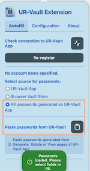
Now the username and password are available on the webpage for auto-fill into text fields. Please click on the UR-Vault icon at the right end of the text field to display list of options for autofill.
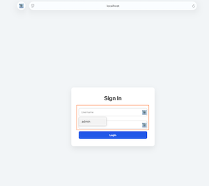
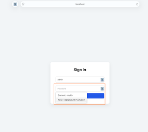
Once the password works on the website, store the password on UR-Vault App.
Important: The generated password will not be available on the App if it is not stored.
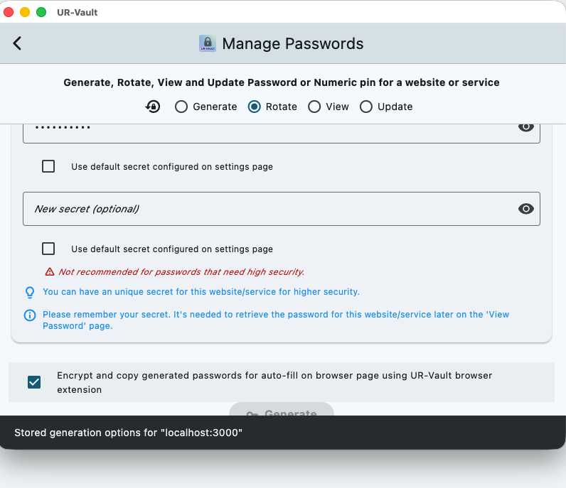
Important: The password for a website or service can be viewed by selecting the View option. The Account nickname and username can be updated using the Update option.
For subsequent login to the webpage, you can use the option UR-Vault App for Select source for passwords to load the passwords.
First select Find to find a match on the stored websites, and then click on Load password.
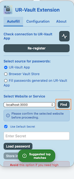
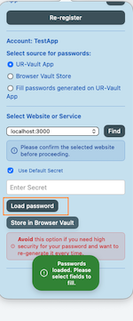
4. Rotate password for a website
Go to Manage Passwords on UR-Vault App and select Rotate option. Enter all the details. The website name can be got from the browser extension.
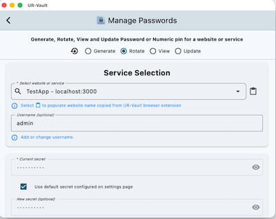
Click on Generate. The current and new passwords are encrypted and copied to clipboard.
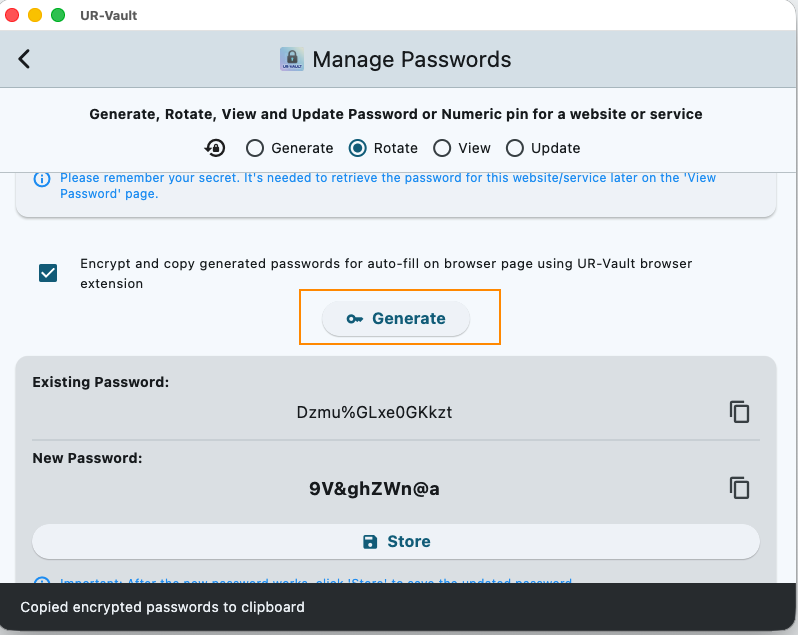
Next, go back to the browser extension Autofill tab.
Select the option Fill passwords generated on UR-Vault App. Click on Paste icon to load the passwords.
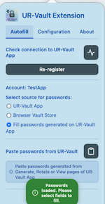
Select the Current: option for the current password.
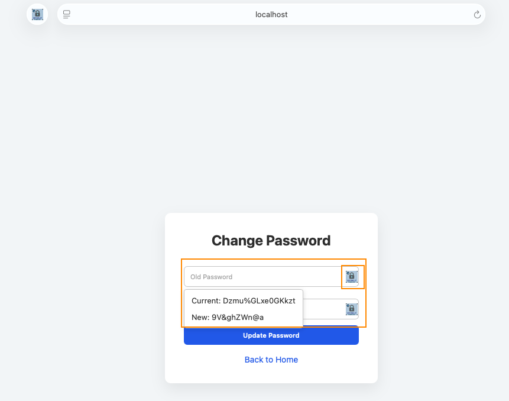
Select the New: option for the new password.
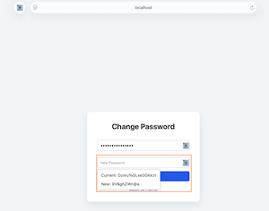
Once the new password works on the website, store the password on UR-Vault App.
Important: The generated password will not be available on the App if it is not stored.
5. Migrate passwords from other providers
Go to Manage Passwords migration on UR-Vault App.
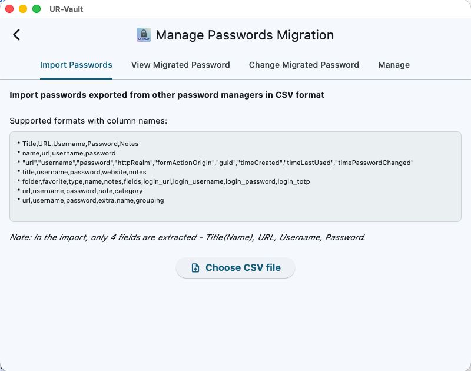
6. Manage stored data
Go to Manage stored data on UR-Vault App. The data that is not needed can be deleted.